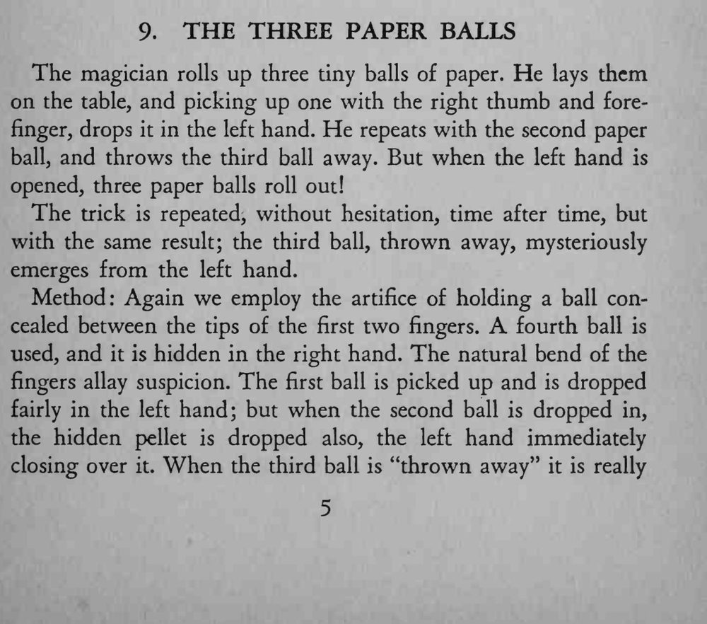
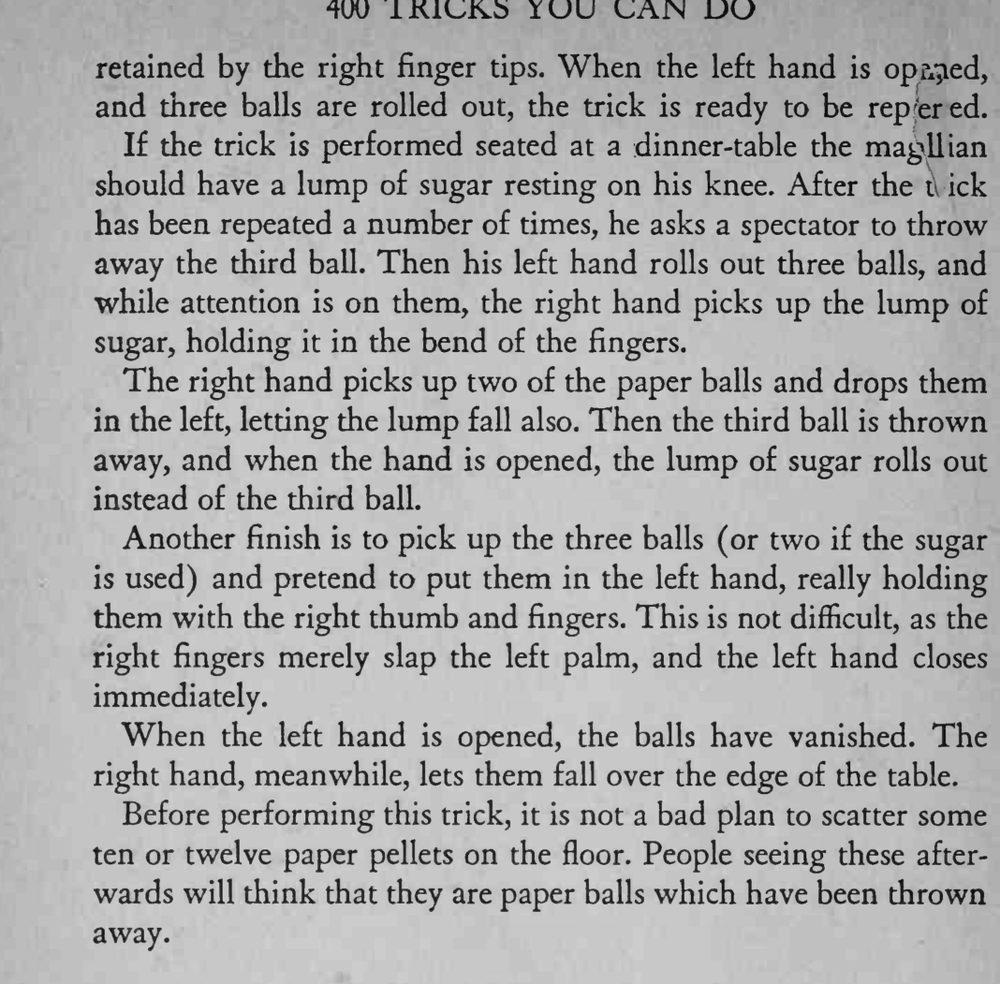

三个小纸球被一个一个丢进左手、第三个被扔出去，可左手一摊开，三个纸球又都滚了出来；反复多次，第三个球总能神秘地回来。
事先在地上散十几个小纸团，观众看到地上的碎屑就会以为是被扔掉的球。


The magician rolls up three tiny balls of paper. He lays them on the table, and picking up one with the right thumb and forefinger, drops it in the left hand. He repeats with the second paper ball, and throws the third ball away. But when the left hand is opened, three paper balls roll out! The trick is repeated, without hesitation, time after time, but with the same result; the third ball, thrown away, mysteriously emerges from the left hand. Method: Again we employ the artifice of holding a ball concealed between the tips of the first two fingers. fourth ball is used, and it is hidden in the right hand. The natural bend of the fingers allay suspicion. The first ball is picked up and is dropped fairly in the left hand; but when the second ball is dropped in, the hidden pellet is dropped also, the left hand immediately closing over it. When the third ball is "thrown away" it is really retained by the right finger tips. When the left hand is opened, and three balls are rolled out, the trick is ready to be reptred. If the trick is performed seated at a dinner-table the magllian should have a lump of sugar resting on his knee. After the t ick has been repeated a number of times, he asks a spectator to throw away the third ball. Then his left hand rolls out three balls, and while attention is on them, the right hand picks up the lump of sugar, holding it in the bend of the fingers. The right hand picks up two of the paper balls and drops them in the left, letting the lump fall also. Then the third ball is thrown away, and when the hand is opened, the lump of sugar rolls out instead of the third ball. Another finish is to pick up the three balls (or two if the sugar is used) and pretend to put them in the left hand, really holding them with the right thumb and fingers. This is not difficult, as the right fingers merely slap the left palm, and the left hand closes immediately. When the left hand is opened, the balls have vanished. The right hand, meanwhile, lets them fall over the edge of the table. Before performing this trick, it is not a bad plan to scatter some ten or twelve paper pellets on the floor. People seeing these afterwards will think that they are paper balls which have been thrown away.